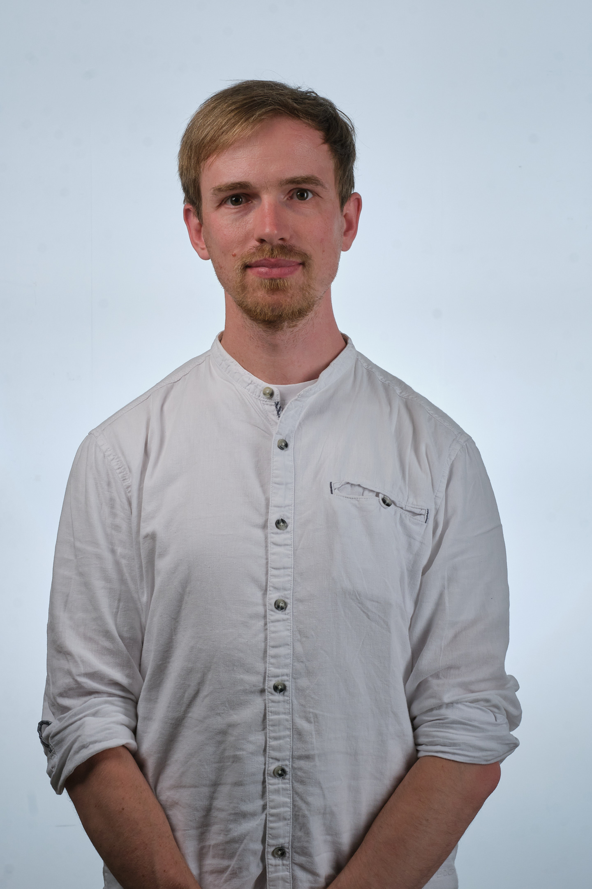

Dr. Georg S. Völker
Atmospheric Scientist
Physical Oceanographer
Science Communicator
AGU Voice for Science
Scienctists for Future

Atmospheric Scientist
Physical Oceanographer
Science Communicator
AGU Voice for Science
Scienctists for Future
research associate (postdoc)
Feb 2018 - to date
Goethe University Frankfurt
Institute for Atmospheric and Environmental Sciences (IAU)
Theory of Atmospheric Dynamics and Climate
research associate (Ph.D.)
Nov 2013 - Mar 2017
Bremen University
Center for Marine Environmental Science (MARUM)
Institute for Environmental Physics (IUP), work group for physical oceanography
Dr. rer. nat. / Ph.D. in Physics
Nov 2013 - Mar 2017
Bremen University, Center for Marine Environmental Science (MARUM), Institute for Environmental Physics (IUP), International Research Training Group ArcTrain
"Process Studies on the Generation of Near-Inertial Internal Gravity Waves by Wind"
Certificate in Environmental Physics
Oct 2012 - Sep 2013
Bremen University, Institute for Environmental Physics (IUP), Postgraduate Program Environmental Physics (PEP)
B.Sc. in Physics
Oct 2009 - Sept 2012
Leipzig University, Faculty of Physics, International Physics Studies Program (IPSP), Thesis at Leibniz Institute for Tropospheric Research (TROPOS), Physics Department - Clouds
"Theoretical Investigations into the Optimization of an Optical Particle Spectrometer for the Detection of Ice at LACIS"
Mit Wissen ans Ziel.
Phasellus enim sapien, blandit ullamcorper elementum eu, condimentum eu elit. Vestibulum ante ipsum primis in faucibus orci luctus et ultrices posuere cubilia luctus elit eget interdum.
Phasellus enim sapien, blandit ullamcorper elementum eu, condimentum eu elit. Vestibulum ante ipsum primis in faucibus orci luctus et ultrices posuere cubilia luctus elit eget interdum.
Phasellus enim sapien, blandit ullamcorper elementum eu, condimentum eu elit. Vestibulum ante ipsum primis in faucibus orci luctus et ultrices posuere cubilia luctus elit eget interdum.
Phasellus enim sapien, blandit ullamcorper elementum eu, condimentum eu elit. Vestibulum ante ipsum primis in faucibus orci luctus et ultrices posuere cubilia luctus elit eget interdum.
Crucial Role of Obliquely Propagating Gravity Waves in Tropical Stratospheric Circulation.
Y-H Kim, GS Voelker, G Bölöni, G Zängl, U Achatz
preprint on arXiv, 2023
Instability cascade of strongly nonlinear gravity waves in a vertically sheared atmosphere
GS Voelker, M Schlutow
preprint on arXiv, 2023
Multi-Scale Dynamics of the Interaction Between Waves and Mean Flows: From Nonlinear WKB Theory to Gravity-Wave Parameterizations in Weather and Climate Models
U Achatz, Y-H Kim, GS Voelker
preprint on arXiv, 2023
MS-GWaM: A 3-dimensional transient gravity wave parametrization for atmospheric models
GS Voelker, G Bölöni, Y-H Kim, Günther Zängl, U Achatz
preprint on arXiv, 2023
An application of WKBJ theory for triad interactions of internal gravity waves in varying background flows
GS Voelker, TR Akylas, U Achatz
Quarterly Journal of the Royal Meteorological Society 147 (735), 2021
On strongly nonlinear gravity waves in a vertically sheared atmosphere: Part I: Spectral stability of the refracted wave
M Schlutow, GS Voelker
Mathematics of Climate and Weather Forecasting 6 (1), 2021
Estimates of wind power and radiative near-inertial internal wave flux: The hybrid slab model and its application to the North Atlantic
GS Voelker, D Olbers, M Walter, C Mertens, PG Myers
Ocean dynamics 70, 2020
Generation of oceanic internal gravity waves by a cyclonic surface stress disturbance
GS Voelker, PG Myers, M Walter, BR Sutherland
Dynamics of Atmospheres and Oceans 86, 2019
Response of the internal wave field to remote wind forcing by tropical cyclones
J Köhler, GS Völker, M Walter
Journal of Physical Oceanography 48 (2), 2018
Dr. Georg S. Völker
Hügelstraße 92
60433 Frankfurt am Main
zum Kontaktformular